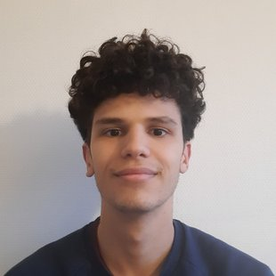

Alexandre Gonzalez

Ingénieur-étudiant • Développement XR (Unity, C#)
Étudiant ingénieur à Télécom SudParis, curieux et investi, à l'aise en équipe : projets collectifs de 2 à 5 personnes, deux stages en startup (VR de formation, AR pour le musée de l'École polytechnique) et animateur BAFA depuis 2022.
- StatutDisponible dès mars 2027stage de césure, 4 à 6 mois
- DomainesXR · IA 3D · Jeu vidéoVR, AR, génération de gestes
- StackUnity, C#, PythonPyTorch, C++, Symfony
- BaseMassy, FranceTélécom SudParis, IP Paris
Projets
Ce que j'ai construit, et ma part dans chaque projet
Cinq projets, de l'IA au jeu vidéo. Chaque fiche détaille le contexte, ma contribution et les limites.
- CassiopéeMontre que MambaTalk cesse d'utiliser l'audio à 25 % des données, malgré des métriques stables.Pipeline Grad-CAM, entraînements MambaTalk
- CyraNoseJeu de rôle tactique en C++ où l'escrime se combine aux joutes verbales.Interface de combat, tirades XML, tests
- Tower DefenseJeu de défense de tours 3D sous Unity, avec énergie, économie et installations de soutien.Installations, économie, HUD
- HubrisPlatformer 2.5D en équipe de cinq, avec ennemis, boss et shaders.IA ennemie, attaque du boss
- PeakPixApplication Symfony de galeries de photos de sommets, publiques ou privées.Modèle de données, accès, tests
Parcours
Formation et expériences
Formation
-
Diplôme d'ingénieur généraliste du numérique
Télécom SudParis, IP Paris
-
CPGE MPSI-MP
Lycée Champollion, Grenoble
-
Baccalauréat général, mention Très Bien
Lycée Louis Armand, Chambéry
MathématiquesPhysique-ChimieSection européenne
Expériences
-
ARY · startup AR/XR
Stagiaire AR/XR · Incubateur de l'École polytechnique, Palaiseau
- Développement Unity/C# d'une expérience AR sur tablette pour le MusX
- Intégration d'objets 3D, animations et interactions du parcours pédagogique
- Tests sur tablette et smartphone : performance, ergonomie, lisibilité
-
Hyperfiction · startup VR/XR
Stagiaire VR/XR · Annecy
- Conception du mode pas à pas d'un simulateur VR de réglage et d'utilisation d'une décortiqueuse de noix de cajou
- Création du scénario de formation avec VR Builder et XR Interaction Toolkit
-
NTN Europe · industrie
Stagiaire équipement client · Annecy
- Support technique et configuration réseau de nouveaux postes
-
Planet'Jeunes · centre de loisirs
Animateur BAFA · Méry
Compétences
Outils, langues et centres d'intérêt
XR et moteurs
- Unity
- XR Interaction Toolkit
- VR Builder
- WebAR (notions)
Langages
- C#
- C / C++
- Python
- Java
IA et données
- PyTorch
- SQL
3D et animation
- Blender (notions)
Langues
- Français langue maternelle
- Anglais B2
- Espagnol C1
Centres d'intérêt
- Game design
- Football
- Randonnée
- Ski
Contact
Travaillons ensemble
À la recherche d'un stage de césure de 4 à 6 mois à partir de mars 2027, pour appliquer la 3D et l'IA à la formation, la santé, la simulation ou aux jeux vidéo.
- alexandre.gm@outlook.com
- Massy, France